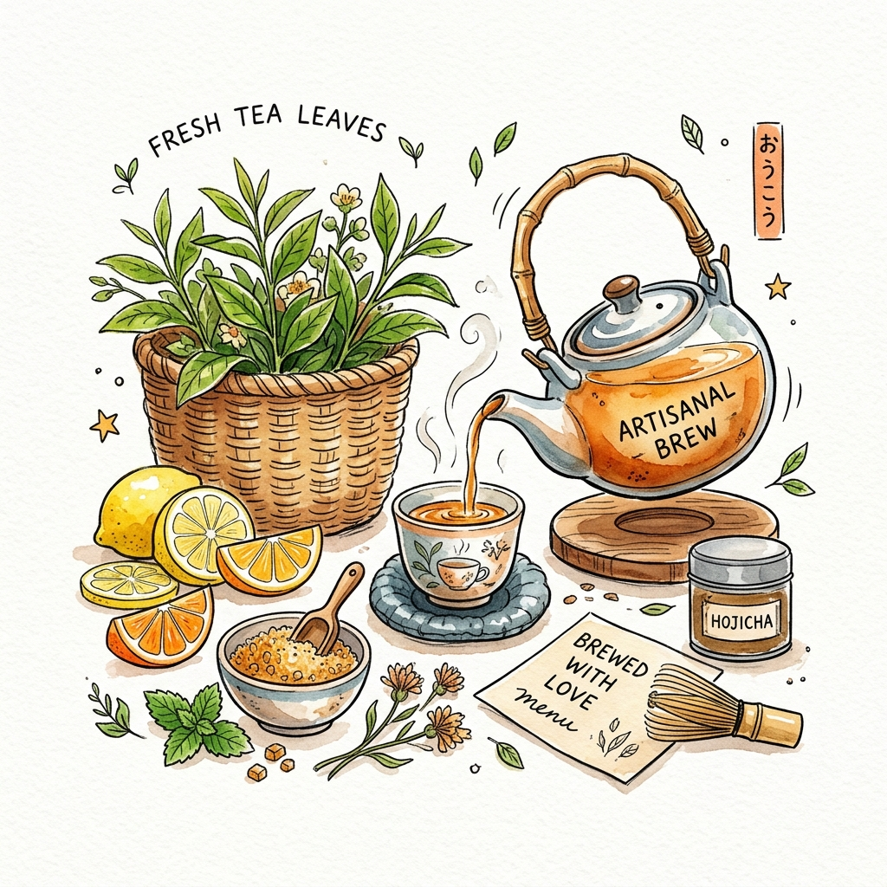

🏆 經典招牌鮮果系列
紅柚翡翠
Fresh Grapefruit Jade Green Tea
堅持每日人工手挖新鮮飽滿的紅葡萄柚果肉，保留果粒爆汁口感與清甜微酸，融合茉莉薰香的翡翠綠茶，入口回甘不苦澀。
主要原料：每日現剝紅柚果肉、茉莉翡翠綠茶
黃金比例：推薦 微糖 (30%) ｜ 少冰或微冰
$69 / 大杯
🛒 點這杯飲料
堅持每日人工手挖新鮮飽滿的紅葡萄柚果肉，保留果粒爆汁口感與清甜微酸，融合茉莉薰香的翡翠綠茶，入口回甘不苦澀。
嚴選彰化秀水新鮮白甘蔗原汁冷壓鮮榨，搭配輕度發酵焙火的台灣四季春茶。自帶甘蔗天然蔗甜香，喉韻清甜爽口。
當季柳橙現榨原汁，果香濃郁馥郁，每一口都喝得到柑橘的清新甜感，與翡翠綠茶交織出最自然無負擔的果韻。
深焙熟成烏龍經過長時間慢火烘焙，搭配台灣在地小農優質鮮乳，茶感渾厚、乳香溫潤，尾韻帶有焦糖甜香。
傳統古法手工翻炒黑糖，慢火蜜熬大波霸珍珠，溫熱 Q 彈的珍珠裹滿焦香黑糖蜜，倒入純濃冰鮮奶，不加一滴水！
取名自「經 33 小時精細烘焙焙火，經過 3 道反覆揉捻工序」。茶湯金黃透亮，焙火麥香撲鼻，回甘生津綿延不絕。
新鮮富士蘋果原汁壓榨，搭配帶有天然熟成蜜桃果香的台灣紅萱紅茶，酸香清透、果香迷人，下午茶的最佳解膩首選。
嚴選低溫慢發酵白茶為茶底，融入黃金香柚細緻果泥，散發淡雅白色小花香氣與柚皮精油芬芳，口感如絲綢般優雅輕盈。
遵照古法柴燒冬瓜磚細火慢熬出香醇濃郁的冬瓜糖露，加入屏東九如現榨檸檬原汁，酸甜層次分明，夏日消暑解熱第一名！

我們堅持與台灣默默耕耘的在地小農合作。無論是每天清晨手工手挖的紅柚果肉、秀水清甜的白甘蔗，還是遵循古法柴燒烘焙的原葉烏龍，每一樣食材都乘載著職人土地的厚實與用心。
一杯好茶，不只要好喝，更要讓你在繁忙的生活節奏裡，喝到最樸實、最天然的安心滋味。